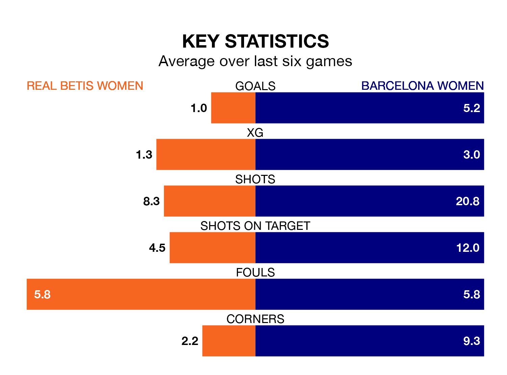

Barcelona Women visit Real Betis Women at Ciudad Deportiva Luis de Sol on Sunday lunchtime on the back of 13 consecutive wins in Primera Division Women.
It means Barcelona have picked up the maximum 39 points from their last 13 games, and they face a Betis Women side who have lost their last four matches, and collected 13 points from the last possible 39.
With 59 goals in 13 games so far this season, Barcelona are the league's highest scorers with 4.5 goals per game. And they are conceding fewer than average, letting in three goals at a rate of 0.2 per game.
Betis Women, meanwhile, are below average scorers, with 1.1 goals per game, compared to a league average of 1.6. They have conceded 2.2 goals per game.
The away side are top of the table after 13 games, of which they have won 13 and drawn none, earning 39 points.
The hosts are 11 places behind Barcelona in 12th, with four wins and one draw putting them on 13 points.
In Caroline Graham Hansen, Barcelona have one of the league's sharpest shooters so far this season. She has notched 10 goals in 11 appearances, to sit second in the scoring charts.
Her goal rate of one every 84 minutes is much quicker than that of Tiffany Cameron, Betis Women's top scorer with a goal every 191 minutes, and a total of three goals in 13 games.
In the last 10 years, Betis Women and Barcelona have played each other on 13 occasions. Barcelona won 12 of them and they drew once.
On average, Betis Women scored 0.2 goals and Barcelona 3.9 in those matches.
Their last meeting was on February 5, when Barcelona won 7-0 at home.
Betis Women's last match was on January 7, a 3-2 loss against Granada Women, with Cameron and Dorine Nina Chuigoue getting the goals for Betis Women.
Barcelona beat Levante Las Planas 9-1 last time out, on January 6, with Patricia Guijarro Gutiérrez (two), Aitana Bonmati Conca, Asisat Lamina Oshoala, Claudia Pina Medina, Graham Hansen, Mariona Caldentey Oliver, Salma Paralluelo Ayingono and Victoria López on the scoresheet.
Updated: 14:53 (UTC), 16/01/24